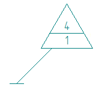
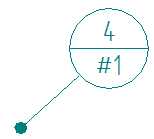

Reference a technical requirement
You can create associative references to the item numbers in a technical requirements list from other annotations, such as GOST weld symbols and balloons.
-
Double-click an annotation to edit it and display the Properties dialog box.
Example:If you edit a balloon, the General tab in the Balloon Properties dialog box is displayed.

-
In the Properties dialog box, position your cursor where you want to insert associative reference text, and click the Reference Text button
 .Example:
.Example:In a balloon, you can insert reference text into any of four fields (Upper, Lower, Prefix, or Suffix).
-
In the Select Reference Text dialog box, do the following:
-
From the Sheet list, select the draft working sheet where the technical requirements list is located.
-
From the Source type list, choose Technical Requirements.
-
Verify that the Field list is set to Item Numbering.
-
In the Source/Value table grid, the numbers in the Value column match the numbers in the technical requirements list on the sheet. Select the numbered item that you want to reference by double-clicking it.
Observe the following in the Select Reference Text dialog box:
-
The technical requirement number you selected is shown in the Preview pane. This is the reference number that displays in the annotation.
-
The underlying property text code is shown in the Reference text box.
-
-
(Optional) In the Reference text box, type any characters that you want to appear in front of the reference number, such as n. or #.
-
Click OK to close the Select Reference Text dialog box, and then click OK again to close the Properties dialog box and update the annotation.
The contents of the technical requirement are not displayed in the balloon, only the reference number plus any additional characters that you typed.
Example:-
In the first balloon, the reference to technical requirement 1 was inserted into the balloon Suffix field.

-
In the second balloon, the reference to technical requirement 1 was inserted into the balloon Lower field.

-
-
-
Another way to add the n. and # shown in the examples above is to type them into the text fields on the Balloon command bar or in the Balloon Properties dialog box.
-
You can attach another annotation to a technical requirements list. For example, you can define a surface texture symbol, and then select a keypoint on a technical requirements list as the placement point for the surface texture terminator.
Technical Requirements
1. Other surface texture
2. Refer to GB4458.5-2003
How do I
Add technical requirements to a drawingReference an annotation from a technical requirements list
Learn more
Adding technical requirementsLook up more details
Technical Requirements Properties dialog boxGeneral tab (Technical Requirements Properties dialog box)
Location tab (Technical Requirements Properties dialog box)
Text Format tab (Technical Requirements Properties dialog box)
Title tab (Technical Requirements Properties dialog box)
Indents and Spacing tab